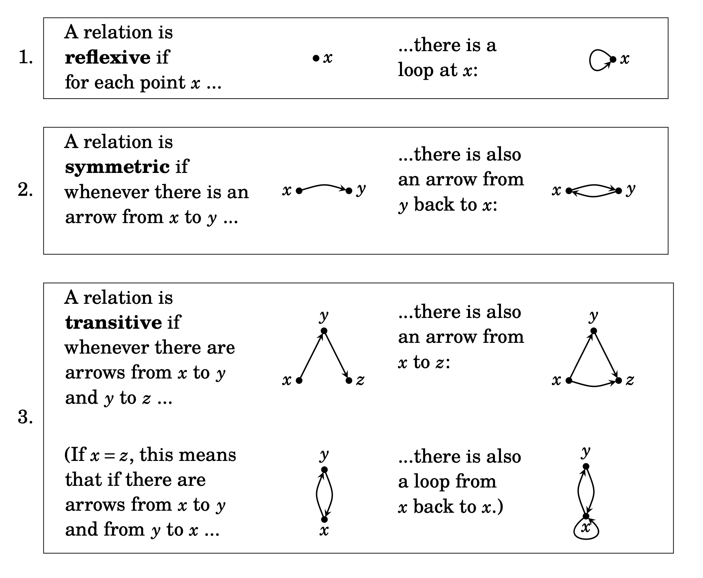

Logic and predicates
Material implication
Implication is defined as: \((x \implies y) \iff (\neg x \lor y)\)
It has the truth table:
| \(x\) | \(y\) | \(x \implies y\) |
|---|---|---|
| 0 | 0 | 1 |
| 0 | 1 | 1 |
| 1 | 0 | 0 |
| 1 | 1 | 1 |
Equivalence
Equivalence is defined as: \((x \equiv y) \iff (x \land y) \lor (\neg x \land \neg y) \iff (x\) XNOR \(y)\)
It has the truth table:
| \(x\) | \(y\) | \(x \implies y\) |
|---|---|---|
| 0 | 0 | 1 |
| 0 | 1 | 0 |
| 1 | 0 | 0 |
| 1 | 1 | 1 |
And it can be proven by:
Proposition \(P \iff Q\)
Proof:
1) Prove that \(P \implies Q\)
2) Prove that \(Q \implies P\)
Logic laws
| Type | Conjunction (“and” form) | Disjunction (“or” form) |
|---|---|---|
| Associativity | \((x \land y) \land z \equiv x \land (y \land z)\) | \((x \lor y) \lor z \equiv x \lor (y \lor z)\) |
| Commutativity | \(x \land y \equiv y \land x\) | \(x \lor y \equiv y \lor x\) |
| Negation | \(\neg (\neg x) \equiv x\) | \(\neg (\neg x) \equiv x\) |
| Identity | \(x \land T \equiv x\) | \(x \lor F \equiv x\) |
| Annihilation | \(x \land F \equiv F\) | \(x \lor T \equiv T\) |
| Idempotence | \(x \land x \equiv x\) | \(x \lor x \equiv x\) |
| Excluded middle | \(x \land \neg x \equiv F\) | \(x \lor \neg x \equiv T\) |
| De Morgan’s | \(\neg (x \land y) \equiv \neg x \lor \neg y\) | \(\neg (x \lor y) \equiv \neg x \land \neg y\) |
| Absorption | \(x \land (x \lor y) \equiv x\) | \(x \lor (x \land y) \equiv x\) |
| Distributivity | \(x \lor (y \land z) \equiv (x \lor y) \land (x \lor z)\) | \(x \land (y \lor z) \equiv (x \land y) \lor (x \land z)\) |
Note that these laws occur act the similarly for some other binary operators, including:
- \((\land) \rightarrow (\cap)\) and \((\lor) \rightarrow (\cup)\)
- \((\land) \rightarrow (\exists)\) and \((\lor) \rightarrow (\forall)\)
Proving absorption from other laws: \(x \lor (x \land y) \\ (x \land T) \lor (x \lor y) \quad\quad (reverse\ identity) \\ x \land (T \lor y) \quad\quad (distibutivity) \quad\quad\quad\quad \\ x \land T \quad\quad (annihilation) \quad\quad\quad\quad\quad\quad \\ x \quad\quad (identity) \quad\quad\quad\quad\quad\quad\quad\quad\quad\quad\)
Sets
Set builder definitions of operations
We can express the main set operations in set builder notation as follows:
\(A \cap B = \{x : x \in A \land x \in B\}\) \(A \cup B = \{x : x \in A \lor x \in B\}\) \(A \setminus B = A \cap \overline{B} = \{x : x \in A \land x \notin B\}\) \(A \times B = \{(x,y) : x \in A, y \in B\}\)
Proofs on sets
-
Proving an item is an element of a set
Proposition \(a \in \{x \in S : P(x)\}\)
- Verify that \(x \in S\)
- Verify that \(P(a)\) is true
-
Proving a set is a subset of another set, we want to prove that \(a \in A \implies a \in B\) for an arbitrary \(a\)
Proposition \(A \subseteq B\)
Proof:
Suppose \(a \in A\), for an arbitrary \(a\)
…
Therefore \(a \in B\)
Hence, every element in \(A\) is also in \(B\), so \(A\) is a subset of \(B\)
-
Proving two sets are equal
Proposition \(A = B\)
Proof:
Prove that \(A \subseteq B\)
Prove that \(B \subseteq A\)
Therefore, since they are subsets of each other, \(A=B\)
-
When doing proofs about set subtraction, generally re-writing as unions and intersections then applying laws is helpful
-
When doing proofs on power sets or containment of elements, generally picking an arbitrary set/element is helpful
-
When doing proofs on set multiplication, set builder notation is generally helpful
Relations
Properties of relations
Consider a relation \(R : A \rightarrow B\)
- A relation is reflexive if \(aRa \quad \forall a\), i.e. every element is related to itself
- A relation is symmetric if \(aRb \implies bRa \quad \forall a,b\), i.e. all relations are bi-directional
- A relation is antisymmetric if \(aRb \land bRa \implies a = b \quad \forall a,b\), i.e. all bi-directional relations are from an item to itself
- A relation is transitive if \(aRb \land bRc \implies aRc \quad \forall a,b,c\)

Types of relations
- Equivalence relations are reflexive, symmetric and transitive
- Partial order relations are reflexive, antisymmetric, and transitive
- In partial order relations, some elements have named properties, including:
- Maximal, an element which relates to no other element (\(\exists x \in P, \forall y \in P \quad \| \quad x \nprec y\))
- Minimal, an element which is related to by no other element (\(\exists x \in P, \forall y \in P \quad \| \quad y \nprec x\))
- Greatest, an element which is related to by every other element (\(\exists x \in P, \forall y \in P \quad \| \quad y \prec x\))
- Least, an element which relates to every other element (\(\exists x \in P, \forall y \in P \quad \| \quad x \prec y\))
- Two elements are incomparable if there is no relation between them in either direction (\(x,y \in P \quad \| \quad x \nprec y \land y \nprec x\))
- In partial order relations, some elements have named properties, including:
- Total order relations are partial order relations where every element either relates to is or related to by every other element
- Equivalence classes
- An equivalence classes is the set of elements within the domain which have all have an equivalence relation to each other
- The equivalence classes of a relation are all disjoint, and cover the entire set, i.e. they partition the relations input set
- The set of all equivalence classes for a relation is called the quotient of the input set, as it divides it up into partitions
Functions
Consider the relation \(f : A \rightarrow B\)
-
For a relation to be a function, it must only map values into the co-domain, and every value in the domain maps to exactly one value in the range. Formally, we write this as \(\forall x \in A, \exists! y \in B \quad x \sim y\)
To prove this:
- For small domains and ranges, we can just enumerate all the mappings
- Plotting a graph and looking for discontinuities can be a quick way to see any obvious issues
- To disprove, the easiest approach is a counterexample
-
Function composition \(g \circ f (x)\) is applied outwards, resulting in \(g(f(x))\)
-
A function is called injective (one-to-one) if every value in the range is mapped to by only one value in domain. This is formally written as: \(\forall x,y \in A \quad f(x) = f(y) \implies x = y\)
-
A function is called surjective (onto) if all the elements in the co-domain are covered in the range. This is formally written as: \(\forall y \in B, \exists x \in A \quad y = f(x)\)
-
A function is called bijective if it is both injective and surjective, and only bijective functions have well-defined inverse functions. To find the inverse, generally, take the function definition \(y = f(x)\), and manipulate it to express \(x\) in terms of \(y\), leaving \(x = f^{-1}(y)\). You can verify the inverse is correct by checking that \(f \circ f^{-1} (x) = x\)
-
Sets are called equinumerous if there is a bijective function between them. Two sets can be proved to be equinumerous by either defining the function, or writing pseudocode which directly maps one set to the other.
Graphs
- A set of vertices connected by edges, which can be formally defined as \(G = (V, E)\) where \(V\) is the set of edges, and \(E\) is a collection (set allowing multiplicity to allow parallel edges) of 2-tuples, storing the start and end vertices of the edge. In undirected graphs, the tuples are unordered, in directed graphs they are ordered, to indicate direction with the first being start and the second end vertices.
-
The set of edges \(E\) can be considered a relation \(E : E \rightarrow E\), since \(E \subseteq V \times V\).
- \(E\) is a symmetric relation for all undirected graphs
- \(E\) is an irreflexive relation for all acyclic graphs (graphs without loops)
- We can “label” edges and vertices by creating a function which maps the set of edges/vertices to their labels
Graph isomorphism
-
Graph isomorphism (\(\cong\)) is when two graphs are topologically identical (Additional notes), formally:
Two graphs \(G\) and \(H\) are isomorphic if there is a bijection \(f : V(G)\rightarrow V(H)\) so that, for any \(v,w \in V(G)\), the number of edges connecting \(v\) to \(w\) is the same as the number of edges connecting \(f(v)\) to \(f(w)\).
Proving/disproving isomorphism
- Disproof (“litmus tests” - quick things to check which indicate two graphs are not isomorphic)
- The unordered list of the number of edges of the nodes in each graph must be equal
- The unordered list of the shortest path lengths between all leaf nodes in each graph must be equal
- Proof
- Bijective function between node labels which mean they can be “drawn” the same (the number of edges connecting the nodes in the domain is equal to the number of edges connecting the nodes in the range)
- Disproof (“litmus tests” - quick things to check which indicate two graphs are not isomorphic)
Types of graph
- Empty graphs are when there are no edges (but there may be vertices)
- Complete graphs are when every vertex is adjacent to every other vertex, and are written as \(K_n\) where \(n\) is the number of vertices in the graph
- Cyclic graphs must contain at least one cycle
- Bi-partite graphs are when the vertices can be divided into two disjoint sets such that every edge connects between the two sets (no edges exist between vertices within the same set). Complete bi-partite graphs are when every vertex in one set is connected to every vertex in the other set, and are written as \(K_{n,m}\) where \(n\) and \(m\) are the sizes of the two sets
- Planar graphs can be embedded in a 2-D plane with no edges intersecting
Types of traversals
- Walks are a finite sequence starting and ending in a vertex, alternating vertices and edges, for example \(V_0, (V_0, V_1), V_1, ..., (V_{n-1}, V_n), V_n\), which can be written as \(V_0 \rightarrow V_1 \rightarrow ... \rightarrow V_n\).
- A path is a walk where no edges are repeated
- A simple path is a walk where no vertices are repeated
- A tour is a walk where the start and end vertices are the same
- A cycle is a tour where no edges are repeated
- A simple cycle is a tour where no vertices are repeated
- A vertex is reachable from another vertex if there exists a path between them
- Eulerian cycles are cycles which traverse every edge in the graph exactly once
- Hamiltonian cycles are cycles which traverse every node in the graph exactly once
Other definitions
-
Graph colouring is allocating labels called “colours” to vertices, and is called “proper” when no adjacent vertices have the same colour. A graph is called \(k\)-colourable if there exists a proper colouring using only \(k\) colours
-
Subdividing in a graph is adding an additional vertex in the middle of an edge
Graph theorems
- Handshaking theorem: The sum of the degrees of every vertex in an undirected graph is twice the number of edges in the graph
- In an undirected graph, the reachability relation on \(V\) is an equivalence relation
- Bi-partite graphs (and trees) are 2-colourable
- Euler’s (& Hierholzer) theorem: A connected undirected graph contains an eulerian cycle if and only if each vertex has an even degree
- Kuratowski’s theorem: All non-planar graphs contain a subgraph isomorphic to either \(K_5\) or \(K_{3,3}\)
Trees
Five definitions of a tree \(T = (V, E)\)
- Acyclic and connected
- Acyclic and \(\|E\| = \|V\|-1\)
- Connected and \(\|E\| = \|V\|-1\)
- Connected, but removing any edge makes it disconnected
- Acyclic, but adding any edge between existing vertices makes it cyclic
Combinatorics
Full explanations are given, as sometimes the question requires more than just the formula
-
Multiplication principle
- If two independent operations are performed in succession, and the first can be performed in \(n\) ways, and the second \(m\) ways, then the total number of ways of performing the pair of operations is \(n \cdot m\)
-
Arrangements - “The number of ways to order a sequence of \(n\) distinct items”
The number of items which could be selected first is the total number of items, then the number of items which could be selected second is one minus the total, as one of the items is already in place in the sequence. This continues until there is only one item left, so it is a factorial function \(n!\)
-
Permutations - “The number of ways to order \(r\) selections from \(n\) distinct items”
This is similar to arrangements (which are in fact just \(nPn\)), however, only \(r\) items are selected, not all \(n\), so we don’t multiply the last \(n-r\) selections into the total number of ways. Hence, the formula is: \(nPr = n \cdot (n-1) \cdot (n-2) ... (n-r) = \frac{n!}{(n-r)!}\)
-
Combinations - “The number of possible unordered selections of length \(r\) from \(n\) distinct items”
This is like permutations, however, or does not matter. To account for this, as well as dividing by the \((n-r)!\) unselected items as in permutations, we also divide by number of ways the selected items could be arranged to remove the ordering, which we know from arrangements is just \(r!\) . Hence, the formula is: \(nCr = \frac{n!}{r! \cdot (n-r)!}\)
-
The “stars and bars” technique - Additional sources here and here
The formula for the number of ways to place \(n\) indistinguishable items into \(k\) labelled boxes is: \({n+k-1 \choose n}\)
Probability
- The probability an event \(A\) has of occurring given event \(B\) occurs can be calculated by:
- Two events are independent if:
- Bayes theorem is used if we have a hypothesis, and we want to update our evaluation of its likelihood given evidence \(P(H|E) = \frac{P(H) . P(E | H)}{P(E)}\) Where \(H\) denotes the hypothesis event which might occur, and \(E\) denotes the “evidence” which affects the probability of the hypothesis event occurring